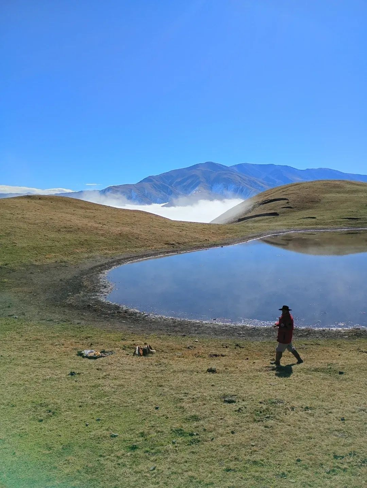

Liberté
Sortir du quotidien, retrouver de l'espace et se reconnecter à ce qui compte.

Des montagnes argentines à la rencontre de soi, Équi-Zénith Ranch invite à renouer avec le vivant, la confiance et le plaisir de s'émerveiller.
Découvrir l'Argentine 2027 ↗Dix jours pour découvrir la culture gaucho, les immensités de Salta et cette sensation rare : être pleinement vivant.
Du 10 au 19 mai 2027, partez pour huit jours d'équitation en montagne, entre paysages changeants, rencontres authentiques et nuits sous les étoiles. Un petit groupe de huit cavaliers maximum.
Explorer le séjour ↗
Sortir du quotidien, retrouver de l'espace et se reconnecter à ce qui compte.
Approcher ses ressources avec curiosité, à son rythme et sans jugement.
Laisser la rencontre avec les chevaux et le vivant ouvrir d'autres perspectives.

Préparation mentale, hypnose, Reiki, cartomancie, équi-coaching, constellations familiales et systémiques avec les chevaux, yoga avec les chevaux.
Plusieurs portes d'entrée, une même invitation : prendre le temps de mieux se connaître et d'avancer avec confiance.
Découvrir les accompagnements ↗L'air de la liberté est celui qui souffle entre les oreilles d'un cheval.
Équi-Zénith Ranch · La nature pour horizon